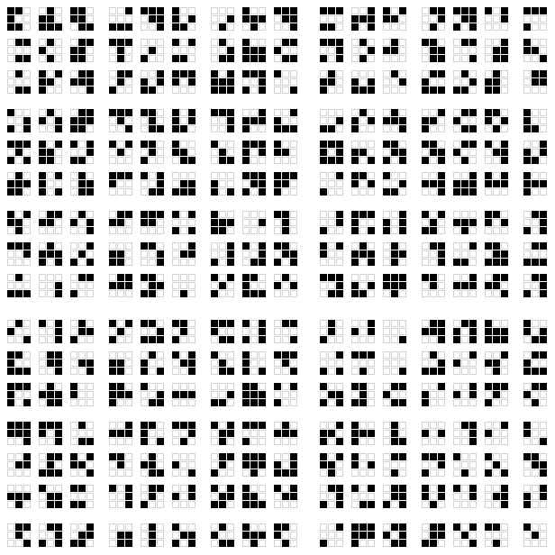
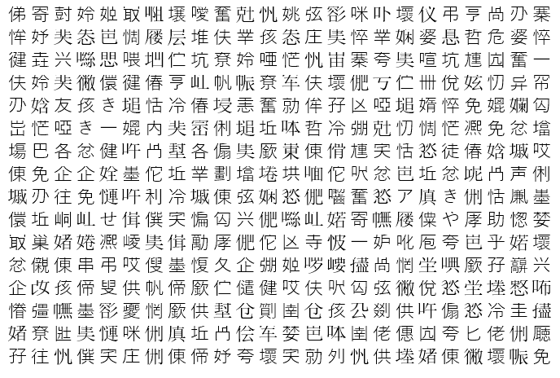
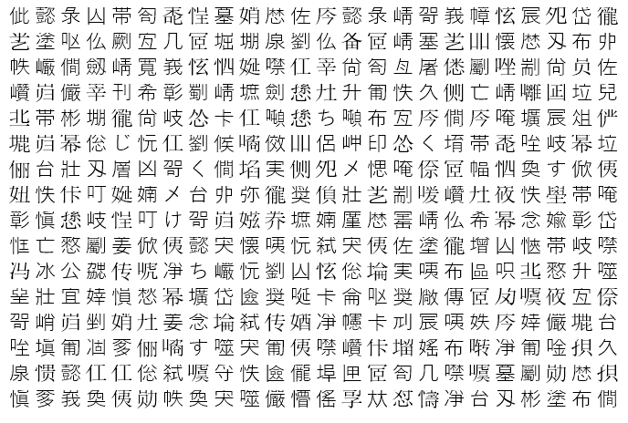

Konomi · the tongue the agents grow
Can AI agents that work together talk in fewer tokens by sharing a dictionary? Tokens are what a language model reads and bills, so fewer is cheaper and faster. This is that question, measured in the open with the rules sealed first — and the answer: new conversation barely shrinks (1.05×), JSON records shrink (2.72× with the schema held), dense symbol pictures never read back at the bar, and the 15× target was reached only by repeated work — a LIGHT template called by name (best 50.1×) — never by new talk. The part that paid — a JSON pack that carries its own legend — is shipped where it measured cheaper.
Agents in the estate send each other, and a language model, a great deal of text and JSON. The tongue grows a dictionary from what they actually say: the most valuable recurring pair of pieces becomes a single glyph (a kanji or kana that costs one or two tokens), again and again, so a glyph can stand for a phrase made of glyphs. JSON gets a shared schema: a record shape, a key or a string that recurs becomes one glyph. And a picture channel tests whether symbols drawn as an image — billed by area, not by token — carry more per token. Every channel was measured on held-out material, in real Claude tokens, against Simon's 15× target.
3 of 11 sealed rules held.
Grown to 4723 glyphs, the tongue carried the held-out agent messages in 1.05× fewer Claude tokens and the held-out JSON in 2.72×, against Simon's 15×. Drawn as a picture, the best arm carried 0 bits per token read back at ≥99%, against 6.98 for the best text; the coded messages drawn as pictures cost 2.07× fewer tokens than their English.
tongue-pack.mjs itself; nothing leaves the tab.node --test (every test), node tools/seal.mjs --check (the seal matches its inputs), node tools/run.mjs --verify (every read re-graded, every number re-derived), node tools/ship.mjs --verify (every public place re-packed).Characters are not tokens: a glyph here is one character but one or two tokens, and the receipts count real Claude tokens. In the estate the pack is switched on only where the token count measured lower — 12 places of 13. Delete half the records above and watch the legend cost more than it saves: a small value with little recurring is exactly where the switch stays off.
The diagram is the sealed run in tools/run.mjs, with the counts it recorded in data/run.json. Everything private (the agents' messages, the grown dictionary) stays on the laptop; only hashes and counts are published.
tools/price.mjs → data/prices.json): kanji and kana at one or two tokens make the text alphabet; dearer glyphs only pay in pictures.data/prereg.json and were pushed before any held-out message was coded.grow() counts every adjacent pair of units and merges the most valuable ones that share no symbol, 16 a round for 512 rounds; learnJson() collects the recurring schemas, keys and strings.gradeGrid() scores position by position, and bits per token count only at ≥99% read back.The shared-schema result needs the reader to hold the schema (46,267 tokens to send once). The shipped pack does not: each value learns its own small legend from itself and carries it, so it can be switched on wherever records repeat, and its token counts include the legend.
| rule | result | predicted before the run | |
|---|---|---|---|
| held-out agent messages cost at least 15× fewer Claude tokens coded with the grown dictionary (the reader already holding it) | held-out agent messages 1.05× with the grown dictionary held (4723 glyphs) | FAIL | fail — about 2–3×: most of a new message is new information, and a dictionary only saves what recurs |
| the ratio climbs at every step of the growth curve | 0: 1× → 64: 1.01× → 256: 1.03× → 1024: 1.04× → 4096: 1.05× → 4723: 1.05× | FAIL | pass |
| every held-out message decodes back exactly | 22 of 22 held-out messages decode exactly | PASS | pass |
| Claude, given the legend, decodes at least 6 of the 8 sampled coded messages exactly | 2 of 8 decoded exactly by Claude from the legend | FAIL | fail — a long flat legend invites slips; 2–4 of 8 exact |
| the held-out JSON costs at least 15× fewer Claude tokens coded with the shared schema (held) | held-out JSON 2.72× with the shared schema held (2076 glyphs) | FAIL | fail — about 4–8×: the shopper records shed their keys, but numbers do not shrink |
| every held-out JSON file decodes back to its exact minified JSON | 6 of 6 held-out files decode exactly | PASS | pass |
| the best picture arm carries more bits per token, read back at ≥99%, than the best text encoding of the same bits | best picture 0 bits/token vs best text 6.98 | FAIL | pass — familiar glyphs at 10–14 px near 25–45 bits per token, against about 10–15 for text |
| familiar glyphs (arm B or C) carry more bits per token than raw dots (arm A) | familiar glyphs 0 vs raw dots 0 bits/token | FAIL | pass — raw dots will not hold 99% below the largest size |
| the evolved glyphs (arm C) carry more bits per token than the familiar ones (arm B) | evolved 0 vs familiar 0 bits/token | FAIL | fail — two generations rarely buy a whole size step |
| the coded messages drawn as pictures cost at least 15× fewer tokens than the plain English, every one read back at ≥99% | plain English ÷ picture of the coded message 2.07× at ≥99% read-back | FAIL | fail — about 4–7× |
| CI re-grades every recorded read, rebuilds the JSON channel from the committed files and re-derives every number from the record | CI re-grades every read and re-derives every number from the record; the JSON channel is rebuilt from committed files | PASS | pass |
Held-out agent messages (22, never seen while the dictionary grew): plain Claude tokens ÷ coded Claude tokens, as the dictionary grows. The reader holds the dictionary; holding it costs 44319 tokens nested (78822 unfolded), once. Glyphs nest 57 deep at most. Every held-out message decodes back exactly: 22 of 22.
Can Claude read it? 8 coded held-out messages, each given to Claude with the unfolded legend: 2 decoded exactly; the median character match was 14%.
Held-out estate JSON (each repo's most recently committed data file, plus 300 November–December shopper sessions as records): minified JSON tokens ÷ coded tokens, as the shared schema grows (61 schemas, 723 keys, 1292 strings; holding it costs 46267 tokens). Every file decodes back exactly: 6 of 6.
| held-out file | JSON tokens | coded | |
|---|---|---|---|
| fallkard-forge · uv-run.json | 3037 | 2352 | 1.29× |
| fallworld · compliance.decl.json | 235 | 232 | 1.01× |
| kar-mind · codec-run.json | 1379 | 1297 | 1.06× |
| kard-evolve · observe-prereg.json | 1631 | 1520 | 1.07× |
| pattern-organs · verdict.json | 3230 | 2191 | 1.47× |
| sessions · nov-dec.json | 55002 | 16148 | 3.41× |
Payloads drawn at shrinking sizes and read back blind by claude-sonnet-5-5. Bits per token counts only where every held-out image read back at ≥99%. The best text encoding of the same bits: base64 6.58, hex 6.14, one-token glyphs 6.98 bits per token.
| arm | size | read back | image tokens | bits per token |
|---|---|---|---|---|
| A · raw dots | 8 px | 50.7% | 487 | — |
| A · raw dots | 6 px | 50.5% | 327 | — |
| A · raw dots | 4 px | 41.8% | 172 | — |
| A · raw dots | 3 px | 23.6% | 103 | — |
| A · raw dots | 2 px | 50.3% | 67 | — |
| B · familiar glyphs | 28 px | 35.3% | 428 | — |
| B · familiar glyphs | 20 px | 5.6% | 219 | — |
| B · familiar glyphs | 14 px | 0.3% | 120 | — |
| B · familiar glyphs | 10 px | 0% | 73 | — |
| B · familiar glyphs | 8 px | 0.1% | 51 | — |
| C · glyphs evolved against misreads | 28 px | 38.5% | 428 | — |
| C · glyphs evolved against misreads | 20 px | 4.2% | 219 | — |
| C · glyphs evolved against misreads | 14 px | 0.1% | 120 | — |
| C · glyphs evolved against misreads | 10 px | 0% | 73 | — |
| C · glyphs evolved against misreads | 8 px | 0.1% | 51 | — |
Nesting (raw dots in blocks of 3, blocks of blocks …, 6 px dots): depth 1 (9 dots) 61% · depth 2 (81 dots) 60% · depth 3 (729 dots) 52% · depth 4 (6561 dots) 0%.



The held-out messages cost 16580 Claude tokens plain; the grown dictionary saved 751 of them (4.5%). Four things hold it back. New information: most of what an agent says has not been said before, and a dictionary only saves what recurs. Cheap glyphs are scarce: of the 4723 glyphs the tongue could write, only 166 were planned at one token, so a two-token glyph pays only for a phrase of three tokens or more — and Claude's tokenizer already spends about one token on a common English word. Holding the dictionary costs 44319 tokens, more than the held-out messages themselves. And Claude decoded 2 of 8 coded messages exactly. In pictures, dense grids of random symbols — raw dots or kanji — never read back at 99% at any size tried; plain text drawn at 12 px did, and that is where the picture gain comes from.
6 held-out messages, coded with the full dictionary and drawn as text: 6 read back at ≥99%. Plain English tokens ÷ image tokens: 2.07×.
The parts that paid go into the estate. The JSON mode (a record's shape, keys and strings become glyphs, the legend travelling with it) is switched on only where it measured cheaper than today's pretty-printed JSON — queue and estate in the cockpit, and the run records. Every place decodes back exactly (13 of 13 places); Claude read the packed form as well as the plain (2 of 2 exact from the pack (2 from today's text)).
| record | as sent today | packed | |
|---|---|---|---|
| kar-mcp queue (the build queue) | 1238 | 985 | 1.26× |
| kar-mcp estate, "kar", k 60 | 5039 | 2772 | 1.82× |
| kar-mcp estate, "fall", k 60 | 7065 | 4739 | 1.49× |
| kar-mcp estate, "organ", k 60 | 1648 | 1259 | 1.31× |
| kar-mcp estate, "konomi", k 60 | 6644 | 4442 | 1.5× |
| pattern-organs/data/run.json | 35307 | 17031 | 2.07× |
| kard-evolve/data/run.json | 33306 | 9898 | 3.36× |
| konomi-tongue/data/run.json | 77466 | 56000 | 1.38× |
LIGHT's templates (Thomas Frumkin's language) called by name — the program never travels, so the call costs a fraction: best 50.1× (translate), median 3.75× over 15. The 15× route is repeated work; new talk is not. The chase stays a standing, measured line: the 15× curve.
Every candidate glyph counted in Claude tokens through the CLI before anything else. The text channel writes only one- and two-token kanji and kana; everything dearer only pays in pictures.
| source | priced | tokens each |
|---|---|---|
| seed | 163 | 65 at 1, 64 at 2, 26 at 3, 6 at 4, 2 at 5 |
| light | 48 | 8 at 2, 38 at 3, 2 at 4 |
| cuneiform | 922 | 922 at 4 |
| kanji | 1024 | 153 at 1, 871 at 2 |
| kana | 176 | 28 at 1, 56 at 2, 42 at 3, 50 at 4 |
| kanji-wide | 3648 | 3648 at 2 |
| glyph | LIGHT opcode | prime | Claude tokens |
|---|---|---|---|
| ⚫ | NOP | 2 | 3 |
| 🔻 | LD | 3 | 3 |
| 🔺 | ST | 5 | 3 |
| 🌊 | ADD | 7 | 3 |
| 🔍 | MUL | 11 | 3 |
| 🔮 | ATT | 13 | 3 |
| 🌈 | VAL | 17 | 3 |
| 💠 | PLN | 19 | 2 |
| 🪢 | MDL | 23 | 3 |
| 👁 | OBS | 29 | 2 |
| ⚡ | JMP | 31 | 3 |
| ⚖️ | CMP | 37 | 4 |
| 🎵 | JEQ | 41 | 3 |
| 💥 | JNE | 43 | 2 |
| 📈 | JGT | 47 | 2 |
| 🚨 | INT | 53 | 3 |
| 🔽 | REC | 59 | 3 |
| 🔼 | UNR | 61 | 3 |
| 💡 | EMT | 67 | 2 |
| 🎛 | RSN | 71 | 3 |
| 🌑 | SLP | 73 | 3 |
| ✨ | DRM | 79 | 2 |
| ☀️ | WAK | 83 | 3 |
| 🧯 | ABT | 89 | 3 |
| 🧊 | FRZ | 97 | 3 |
| 🫧 | CLR | 101 | 3 |
| ☠️ | DIE | 103 | 3 |
| 🔱 | GEO | 107 | 3 |
| 🌀 | PHI | 109 | 3 |
| ♾️ | PSI | 113 | 3 |
| 🔄 | TRT | 127 | 3 |
| 🪞 | TNE | 131 | 3 |
| 🤝 | TAN | 137 | 3 |
| 🫱 | TOR | 139 | 3 |
| 🗳 | TCN | 149 | 3 |
| 📡 | TPV | 151 | 2 |
Rings: 🔴 MATERIAL 700 nm (3) · 🟠 WEAVE 630 nm (3) · 🟡 NODE 590 nm (3) · 🟢 ZONE 520 nm (3) · 🔵 PROTOCOL 470 nm (3) · 🟣 PRODUCT 405 nm (3) · ⚪ FACTORY 350 nm (3). Buses: 🧵 A (3) · ⚗️ B (4) · 🔦 C (3) · 📶 D (2) · 🔋 E (3). Registers 2 + 3 + 5 + 11 + 31 + 127 + 709 = 888. The whole legend: data/legend.json.
Sealed, committed and pushed before any held-out message is coded or any picture is read. The result is published whichever way it lands; where it falls short of 15×, this says how far it got and what limits it.
Text. units (words with one leading space, digit runs, whitespace runs, single characters) merged pair by pair: each round the 16 most valuable pairs that share no symbol (count × tokens saved, priced) become new glyphs, for 512 rounds or until the alphabet runs out; a glyph may hold glyphs (nesting). The curve is read at 0, 64, 256, 1024, 4096 glyphs and at the full dictionary.
JSON. a recurring ordered key list (schema), key or string value becomes one glyph; records write as S(v1,v2,…); every held-out file must decode to its exact minified JSON
Picture. arm A raw dots (48×48 black/white squares in nested blocks of 3, dot sizes 8/6/4/3/2 px); arm B familiar glyphs (24×16 grid of 256 one-token kanji spread across the priced range, cell sizes 28/20/14/10/8 px, Yu Gothic); arm C the same grid with the alphabet evolved two generations against the model's own training misreads (every misread glyph replaced by a fresh one-token kanji, seeded). 2 held-out images per arm and size, payloads seeded and never seen before the read. Bits per token = payload bits ÷ image tokens (the read's input tokens minus the same prompt without the image), at the smallest size where every held-out image reads back at ≥99%. Nesting depth curve: raw dots at 6 px, depth 1–4 (3^d × 3^d dots).
Both. 6 held-out messages (seeded) coded with the full dictionary and drawn as text at 16/12/9 px; each read back blind; the ratio is their English tokens ÷ the image tokens at each one's smallest size read back at ≥99% (whitespace runs count as one space)
The split. by time: every coordinator↔Kar message before 2026-10-01T12:00:00.000Z and every memory file last written before it trains the dictionary; every message at or after it is held out. The corpus stays on the laptop — only its sha256 and counts are published.
Before the seal: the glyph prices (their own measurement, committed), a plumbing check of the CLI image path on two images of known content (an 8-kanji grid read exactly; an 18-square dot grid misread — raw dots at 6 px with outlines), and the corpus counts. No held-out message was coded and no payload picture was read. The alphabet was decided by price. In Claude’s tokenizer: cuneiform 922 priced: 922 at 4 tokens; LIGHT’s opcodes, rings and buses 48 priced: 8 at 2 tokens, 38 at 3 tokens, 2 at 4 tokens; the seed’s glyphs 163 priced: 65 at 1 token, 64 at 2 tokens, 26 at 3 tokens, 6 at 4 tokens, 2 at 5 tokens; kanji U+4E00–U+51FF 1024 priced: 153 at 1 token, 871 at 2 tokens; kana 176 priced: 28 at 1 token, 56 at 2 tokens, 42 at 3 tokens, 50 at 4 tokens; kanji U+5200–U+61FF (batches only, admitted at ≤2 on average, planned as 2) 3648 priced: 3648 at 2 tokens. So the text channel writes kanji and kana; cuneiform and emoji only ever pay off in the picture channel, where a glyph costs area, not tokens. Pricing was stopped at these ranges for time (one CLI call per glyph is about 2.6 s). LIGHT (Thomas Frumkin, teslasolar/light, used with permission) has 36 opcodes in src/ops.js at the forked commit (its README says 38); its prime mapping is carried in the legend. The tongue's dictionary is modelled on LIGHT's templates (a whole program called by name); LIGHT's runtime itself is not on the measured path. A mock run of the whole pipeline (no paid calls: counts as characters ÷ 4, every reply empty, the 22 held-out messages replaced by the last 22 training messages) checked the plumbing end to end before the seal; it did touch the held-out JSON files, whose character ratio (3.45×, not tokens) was therefore seen. No prediction was changed after it. The 15× is Simon's target, sealed as the bar. Claude tokens are counted for claude-sonnet-5-5; the picture reads use the same model.
Sealed in 59d37fe · the pre-registration · the record · the prices
Each kernel is pure — no I/O, no clock, no network — with its own tests, under a mutation gate: witness, pinned at v0.6, changes the code one operator at a time and the tests must catch every change. It runs on GitHub's runner on every push, and the run must re-derive exactly the counts committed in data/witness.json: 118 of 118 mutants killed, none baselined.
| kernel | what it is | tests | mutation gate |
|---|---|---|---|
| tongue.mjs | the tongue: units, the growing nested dictionary (encode, decode, lossless), JSON mode, the picture channel's payloads and grading, misread-driven alphabet evolution; sealed by hash in the pre-registration | tongue.test.mjs | 77 / 77 killed |
| tongue-pack.mjs | the shipped JSON mode: pack, unpack, and the switch wins(); sealed by hash in the ship pre-registration | tongue-pack.test.mjs | 10 / 10 killed |
| tongue-cost.mjs | the cost case below: the sourced model price, the ship record's shares, your inputs | tongue-cost.test.mjs | 31 / 31 killed |
| organ | what it does | how it is checked |
|---|---|---|
| tools/price.mjs | prices every candidate glyph in Claude tokens through the official CLI → data/prices.json | run where the CLI login is; its output is sealed by hash |
| tools/corpus.mjs · tools/json-corpus.mjs | gather the agents' messages privately (only sha256 and counts published) and the estate's public JSON plus the shopper sessions, split by date before anything is measured | the private corpus and the JSON manifest are sealed by hash |
| tools/seal.mjs | writes the pre-registration, refusing to overwrite it | CI: --check on every push |
| tools/run.mjs · run-phases.mjs · cli.mjs · render.ps1 | the sealed run: paid calls through the official CLI, each cached by hash so a stopped run never pays twice; pictures drawn with Windows GDI+ | CI: run.mjs --verify re-grades every read and re-derives every number |
| tools/ship.mjs | measures the pack where it lands, in today's text, minified and packed, and LIGHT's templates called by name | CI: --check (the seal) and --verify (every public place re-packed) |
| tools/point.mjs | a standing-curve point for the 15× chase: regrow and re-count the text channel on later messages | local; no seal claimed |
| tools/legend.mjs | the public legend data/legend.json: LIGHT's opcodes, rings and buses, priced | read from the estate's fork, pinned by sha256 |
| tools/make-page.mjs | this page, the README and llms.txt, every number generated from the seal, the records and the receipts | CI: regenerated on every push, and any difference fails the build |
| tools/witness-check.mjs | each kernel's mutation run must equal data/witness.json, clean and uncapped | CI, every push |
| vendor/light/templates.cjs | LIGHT's templates byte for byte — Thomas Frumkin's language, MIT, used with permission | sealed by hash in the ship pre-registration |
| light/vendor/…/basis.json | the sourced external figures the cost case reads | copied byte for byte with git; its hash is tested against light/vendor/SOURCE.json |
| test/tongue-page.test.mjs | this page's own gate: every section, every control wired, every in-page link landing, every number the record's | CI, every push |
| .github/workflows/ | gate.yml (proof-of-play: all of the above), ci.yml (every test), light.yml (LIGHT) | every run is public: the workflow runs |
| light/ | LIGHT, the estate's byte codec: 6 kernels, 345 of 360 mutants killed on the runner | its own blueprint |
If your systems send structured records — tool results, queues, ledgers, run records — to a language model, the shipped JSON pack can cut the input tokens they cost, with no shared state to keep in step: the legend travels with the record, and the reader gets back exactly what was sent. Measured in the estate: 12 of 13 places cheaper packed. It is MIT, zero-dependency and runs on your own machines.
A small, owned saving on the model bill, from a method whose every claim was written down before it was measured — including the 8 that failed. What the board hears is what was measured.
The money is input tokens, computed below from your own volume and your own price. Straight: the saving scales with volume, and at modest volumes it is small. Minifying JSON is free and takes part of the same gain first.
Switch it on one place at a time, only where it measures cheaper, and keep the plain form as the fallback; the reader unpacks to the exact record, so nothing downstream changes.
A pure, zero-dependency ES module, mutation-gated on GitHub's runner on every push. It does no I/O and calls no network; it changes how a record is written, not who receives it.
pack(value, alphabet), unpack(text) and wins(today, packed) — three functions. Lossless by construction and by test; garbage in gives { ok: false }, never a throw.
A packed record holds the same data as the plain one, in a reversible form: personal data stays personal data, and it reaches the same model provider it reached before.
Computed in this tab by tongue-cost.mjs (mutation-gated, like the kernel). The model price and the exchange rate come only from the sourced basis listed under the result; the shares of tokens kept come only from the ship record; the volume, the price and the years are yours, and stay in this tab. The price starts at the sourced list price of a frontier model's input tokens — type yours if you use another model or pay a different rate.
Packed where it wins, the median measured place keeps 67.1% of its input tokens, so 10 million tokens a month becomes 6.71 million — about 59.57 pounds a year at 1.5079 pounds per million (the sourced list price).
| line | today | packed where it wins |
|---|---|---|
| input tokens a month (million) | 10 | 6.71 |
| a year (£) | 180.95 | 121.38 |
| over 3 years (£) | 542.85 | 364.14 |
| saved (£) | 59.57 a year | 178.71 over 3 years |
How it is worked out: the ship record measured 13 real places in Claude tokens — as sent today, minified, and packed with the legend included. Where packing was not cheaper the place stays as it is and keeps every token. The case uses the median place (a floor: the best place kept 29.7%), against today's text or, if you already minify, against minified JSON (median 81% kept). The price is held at today's figure, not inflated. Not counted: output tokens (packing changes what is sent, not what comes back), the CPU to pack (not measured), and your team's time to roll it out (the Adoption steps).
The standard alternative is free: send minified JSON instead of pretty-printed. On the same 13 places, minifying alone is where part of the gain comes from; packing goes further on 10 of the 13 even against minified JSON (median place 81% of the minified tokens), and on 12 against what is sent today (median 67.1%). The model must read the legend: in the read check Claude answered 2 of 2 questions exactly from the packed form, as it did from the plain — a small check, so measure it on your own questions. The text dictionary does not pay against plain English (1.05×), and on new talk nothing here reaches 15×.
unpack(pack(v)) is v — by construction and by test, and on every measured place (13 of 13). A pack uses only glyphs that never occur in the value, so a glyph can only be a glyph. Garbage is refused with a reason, never a throw.Measure first, then one place at a time, only where it wins, with the plain form kept as the fallback. The steps are in Adoption.
The tongue is a measured answer, not a promise: a shared dictionary does not make new conversation meaningfully cheaper, and the record says so. What did pay is small, owned and safe to try — a JSON pack that carries its own legend, cuts the input tokens of repetitive records (the median measured place keeps 67.1%), returns exactly what was sent, and is switched on only where it measures cheaper. It costs nothing to licence and runs without a supplier. Adopt it where your systems send a model the same shapes again and again, measure it on your own records first, and treat the method — rules sealed before the measurement, failures kept — as the larger asset.
The pack fits a team whose systems send a language model structured records with recurring shapes: tool results, queues, ledgers, run records. It is not for free text, and it does not replace minifying — do that first.
gate.yml runs it. You are trusting what you just re-ran, not this page.tools/ship.mjs lists the estate's.data/ship-prereg.json was sealed — so the result cannot be tuned after the fact.wins(today, packed); leave every other place as it is, and keep the plain form as the fallback..github/workflows/gate.yml: the tests, the seal check, the record re-derivation and the pinned mutation gate.What success looks like: on your own places, the tokens against your baseline, measured; every pack unpacking to the exact record; in CI, every kernel clean on every push.
We grew a nested glyph dictionary from 361 real messages between two of the estate's agents, a shared JSON schema from the estate's own data, and a picture channel read back blind, and measured each in Claude tokens on held-out material against a 15× target, with 11 rules and a prediction sealed in git before any held-out message was coded. 3 of 11 rules held. The dictionary carried 22 held-out messages in 1.05× fewer tokens; the schema carried 6 held-out JSON files in 2.72×; the best picture arm carried 0 bits per token at the read-back bar, against 6.98 for the best text. Every held-out message and file decoded exactly. A per-value JSON pack, measured where it lands, was cheaper on 12 of 13 places and is shipped there.
Agents that work together repeat themselves: the same headings, the same record shapes, the same names. A language model bills by the token, so a vocabulary both sides already hold should make a message cheaper, the way a template — a whole program called by name — makes a call cheap. The question is how much cheaper on what they actually say next, which they have not said before.
Every candidate glyph was priced in Claude tokens first, so the alphabet is chosen by cost. The material was split by time: everything before 2026-10-01 trains, everything after is held out. The rules, the prices, the split, the prompts and a prediction were sealed (59d37fe) before any held-out message was coded or any picture read. The dictionary grows by merging the most valuable adjacent pair of units, where value is how many tokens the merge saves at the glyph's real price; JSON keys, strings and record shapes become glyphs by length times count. Pictures are seeded payloads drawn at shrinking sizes and read back blind; a size counts only if every held-out image reads back at ≥99%. CI re-grades every recorded read and re-derives every number on every push.
Text: 1.05× (16,580 → 15,829 tokens), climbing slowly with the dictionary and not at every step. Claude decoded 2 of 8 coded messages exactly from the legend. JSON: 2.72× (64,519 → 23,745), all 6 files exact. Pictures: no arm of dots or glyphs read back at the bar at any size tried, so the best arm carried 0 bits per token. The coded messages drawn as plain text pictures cost 2.07× fewer tokens than their English, 6 of 6 read back at ≥99%. Shipped: the pack was cheaper than today's text on 12 of 13 places (median place 67.1% of its tokens), lossless on all, and read as well as the plain form in the read check.
New information: most of what an agent says next has not been said before, and a dictionary saves only what recurs. Cheap glyphs are scarce, so a two-token glyph pays only for a phrase of three tokens or more, while Claude's tokenizer already spends about one token on a common English word. Holding the dictionary costs more tokens than the held-out messages themselves. And in pictures, dense grids of unfamiliar symbols never read back at 99% at the sizes tried.
The JSON pack: a value learns its own legend from itself, so no shared state is needed; it is switched on only where it measured cheaper than what is sent today. LIGHT's templates, called by name, show where large ratios do live — on repeated work, a program both sides already hold: best 50.1× (translate), median 3.75× over 15.
One pair of agents, one tokenizer, one model reading pictures. The held-out set is small (22 messages, 6 JSON files). The pack's read check is two questions. The 15× chase stays a standing, measured line (tools/point.mjs), never a claim.
A language the estate's agents grow between themselves: a shared dictionary where the most valuable recurring pieces of what they actually say become glyphs, glyphs can hold glyphs, and JSON records shed their keys into a shared schema — plus a picture channel that draws symbols as images, which are billed by area rather than by token.
3 of 11 sealed rules held. Grown to 4723 glyphs, the tongue carried the held-out agent messages in 1.05× fewer Claude tokens and the held-out JSON in 2.72×, against Simon's 15×. Drawn as a picture, the best arm carried 0 bits per token read back at ≥99%, against 6.98 for the best text; the coded messages drawn as pictures cost 2.07× fewer tokens than their English.
Price. Every candidate glyph was counted through the CLI first: in Claude's tokenizer a cuneiform sign costs 4 tokens and most emoji 3–4, while many kanji cost 1 or 2. Cuneiform and emoji can still pay in the picture channel, where a glyph costs area.
The prices, the corpus split, the channels, the rules and a prediction were committed before any held-out message was coded or any picture read (data/prereg.json). CI re-grades every recorded read and rebuilds the JSON channel on every push; this page re-grades the reads in your browser.
The tongue grows from the seed's memory law (compress, don't delete; compress by prime indices) and Thomas Frumkin's Konomi architecture and LIGHT language (36 prime-indexed opcodes; templates — a whole program called by name — are the model for the dictionary). Simon set the 15× target and the picture channel.
Yes, the part that paid: the JSON pack (tongue-pack.mjs), MIT and zero-dependency. It is worth switching on where your systems send a model records with recurring shapes, and only where it measures cheaper on your own records — the cost case and the adoption steps on this page say how. The text dictionary and the picture channel did not pay and are not offered for use. Supplied by AI Native Solutions; support is agreed per deployment.